N-rate Timing
first draft
Key points
We applied N at different rates and timings to IWG stands over 10 site-years
We observed serious lodging in only 1 site-year, and observed lower lodging when N was applied at lower rates and further away from harvest (i.e. fall vs. spring or summer). Lodging was negatively correlated with plant height (\(r=-0.5\))
For both cumulative and yearly yield response to nitrogen rate, a quadratic relationship fit the data best, suggesting there is an optimal N rate.
Combined across all site-years, yields were higher when N was applied in the fall versus in the spring or when split with a summer application.
Of sites where we tracked yield over three years, we failed to reject the Ho that N rate and timing had no impact on the yield of the stand.
The relationship between N rate and timing is complex to measure in field experiments. Site conditions can greatly change the amount of N that becomes available to the plant, especially when applied as urea on the soil surface. More research is required to capture the variability of yield response to N rate and timing.
The optimal fertility program is likely site specific.
Data
Methods
| n.total | timing | stand.age | location | n |
|---|---|---|---|---|
| 0.0 | Control | 1 | NDSU | 4 |
| 0.0 | Control | 1 | Staples | 3 |
| 0.0 | Control | 1 | V17 | 4 |
| 0.0 | Control | 2 | NDSU | 4 |
| 0.0 | Control | 2 | R100 | 3 |
| 0.0 | Control | 2 | Staples | 3 |
| 0.0 | Control | 2 | V17 | 4 |
| 0.0 | Control | 3 | R100 | 3 |
| 0.0 | Control | 3 | Staples | 3 |
| 0.0 | Control | 3 | V17 | 4 |
| 0.0 | Fall | 1 | Staples | 3 |
| 0.0 | Fall | 1 | V17 | 4 |
| 0.0 | Fall | 2 | R100 | 3 |
| 22.4 | Fall | 1 | Staples | 3 |
| 22.4 | Fall | 2 | R100 | 3 |
| 22.4 | Fall-Summer Split | 1 | Staples | 3 |
| 22.4 | Fall-Summer Split | 2 | R100 | 3 |
| 27.5 | Spring | 1 | NDSU | 4 |
| 27.5 | Spring | 2 | NDSU | 4 |
| 44.8 | Fall | 1 | Staples | 3 |
| 44.8 | Fall | 2 | R100 | 3 |
| 44.8 | Fall-Summer Split | 1 | Staples | 3 |
| 44.8 | Fall-Summer Split | 2 | R100 | 3 |
| 44.8 | Fall-Spring Split | 1 | V17 | 4 |
| 55.0 | Spring | 1 | NDSU | 4 |
| 55.0 | Spring | 2 | NDSU | 4 |
| 67.2 | Fall | 1 | Staples | 3 |
| 67.2 | Fall | 2 | R100 | 3 |
| 67.2 | Fall | 2 | Staples | 3 |
| 67.2 | Fall | 3 | R100 | 3 |
| 67.2 | Fall | 3 | Staples | 3 |
| 67.2 | Fall-Summer Split | 1 | Staples | 3 |
| 67.2 | Fall-Summer Split | 2 | R100 | 3 |
| 67.2 | Spring | 1 | Staples | 3 |
| 67.2 | Spring | 2 | R100 | 3 |
| 67.2 | Spring | 2 | Staples | 3 |
| 67.2 | Spring | 3 | R100 | 3 |
| 67.2 | Spring | 3 | Staples | 3 |
| 82.5 | Spring | 1 | NDSU | 4 |
| 82.5 | Spring | 2 | NDSU | 4 |
| 89.6 | Fall | 2 | Staples | 3 |
| 89.6 | Fall | 2 | V17 | 4 |
| 89.6 | Fall | 3 | R100 | 3 |
| 89.6 | Fall | 3 | Staples | 3 |
| 89.6 | Fall | 3 | V17 | 4 |
| 89.6 | Fall-Summer Split | 1 | Staples | 3 |
| 89.6 | Fall-Summer Split | 2 | R100 | 3 |
| 89.6 | Fall-Summer Split | 2 | Staples | 3 |
| 89.6 | Fall-Summer Split | 3 | R100 | 3 |
| 89.6 | Fall-Summer Split | 3 | Staples | 3 |
| 89.6 | Fall-Spring Split | 2 | V17 | 4 |
| 89.6 | Fall-Spring Split | 3 | V17 | 4 |
| 89.6 | Spring | 1 | Staples | 3 |
| 89.6 | Spring | 1 | V17 | 4 |
| 89.6 | Spring | 2 | R100 | 3 |
| 89.6 | Spring | 2 | Staples | 3 |
| 89.6 | Spring | 2 | V17 | 4 |
| 89.6 | Spring | 3 | R100 | 3 |
| 89.6 | Spring | 3 | Staples | 3 |
| 89.6 | Spring | 3 | V17 | 4 |
| 89.6 | Spring-Summer Split | 1 | Staples | 3 |
| 89.6 | Spring-Summer Split | 2 | R100 | 3 |
| 89.6 | Spring-Summer Split | 2 | Staples | 3 |
| 89.6 | Spring-Summer Split | 3 | R100 | 3 |
| 89.6 | Spring-Summer Split | 3 | Staples | 3 |
| 112.0 | Fall | 2 | Staples | 3 |
| 112.0 | Fall | 3 | R100 | 3 |
| 112.0 | Fall | 3 | Staples | 3 |
| 112.0 | Fall-Summer Split | 2 | Staples | 3 |
| 112.0 | Fall-Summer Split | 3 | R100 | 3 |
| 112.0 | Fall-Summer Split | 3 | Staples | 3 |
| 112.0 | Spring | 1 | Staples | 3 |
| 112.0 | Spring | 2 | R100 | 3 |
| 112.0 | Spring | 2 | Staples | 3 |
| 112.0 | Spring | 3 | R100 | 3 |
| 112.0 | Spring | 3 | Staples | 3 |
| 112.0 | Spring-Summer Split | 1 | Staples | 3 |
| 112.0 | Spring-Summer Split | 2 | R100 | 3 |
| 112.0 | Spring-Summer Split | 2 | Staples | 3 |
| 112.0 | Spring-Summer Split | 3 | R100 | 3 |
| 112.0 | Spring-Summer Split | 3 | Staples | 3 |
| 134.4 | Fall | 2 | Staples | 3 |
| 134.4 | Fall | 3 | R100 | 3 |
| 134.4 | Fall | 3 | Staples | 3 |
| 134.4 | Fall-Summer Split | 2 | Staples | 3 |
| 134.4 | Fall-Summer Split | 3 | R100 | 3 |
| 134.4 | Fall-Summer Split | 3 | Staples | 3 |
| 134.4 | Spring | 1 | Staples | 3 |
| 134.4 | Spring | 2 | R100 | 3 |
| 134.4 | Spring | 2 | Staples | 3 |
| 134.4 | Spring | 3 | R100 | 3 |
| 134.4 | Spring | 3 | Staples | 3 |
| 134.4 | Spring-Summer Split | 1 | Staples | 3 |
| 134.4 | Spring-Summer Split | 2 | R100 | 3 |
| 134.4 | Spring-Summer Split | 2 | Staples | 3 |
| 134.4 | Spring-Summer Split | 3 | R100 | 3 |
| 134.4 | Spring-Summer Split | 3 | Staples | 3 |
| 156.8 | Fall-Summer Split | 2 | Staples | 3 |
| 156.8 | Fall-Summer Split | 3 | R100 | 3 |
| 156.8 | Fall-Summer Split | 3 | Staples | 3 |
| 156.8 | Spring | 1 | Staples | 3 |
| 156.8 | Spring | 2 | R100 | 3 |
| 156.8 | Spring | 2 | Staples | 3 |
| 156.8 | Spring | 3 | R100 | 3 |
| 156.8 | Spring | 3 | Staples | 3 |
| 156.8 | Spring-Summer Split | 1 | Staples | 3 |
| 156.8 | Spring-Summer Split | 2 | R100 | 3 |
| 156.8 | Spring-Summer Split | 2 | Staples | 3 |
| 156.8 | Spring-Summer Split | 3 | R100 | 3 |
| 156.8 | Spring-Summer Split | 3 | Staples | 3 |
This is an unbalanced dataset because design was not consistent across sites. One solution is to analyze each site separately, but first we try to see if there is a consistent response across site-years.
| location | year | n |
|---|---|---|
| NDSU | 2020 | 16 |
| NDSU | 2021 | 16 |
| R100 | 2018 | 54 |
| R100 | 2019 | 54 |
| Staples | 2018 | 54 |
| Staples | 2019 | 54 |
| Staples | 2020 | 54 |
| V17 | 2019 | 16 |
| V17 | 2020 | 16 |
| V17 | 2021 | 16 |
Lodging
Understanding lodging is not a primary objective of this experiment, this data was only collected as a covariate if there happened to be a lot of lodging.
In general, if lodging is above 6, the yield data is questionable.

Only R100 and V17 showed lodging, and only R100 had severe lodging to the point where the yield data probably is not very accurate.
R100
R100 only had N applied in the second and third year.

Lodging only occurred in the stands third year of production.

We observe a general increase in lodging as nitrogen rate increases. We fit a logistic curve since lodging cannot be greater than 10 and we expect as we increase N rate more lodging will get closer to 10. This curve is obviously not perfect.
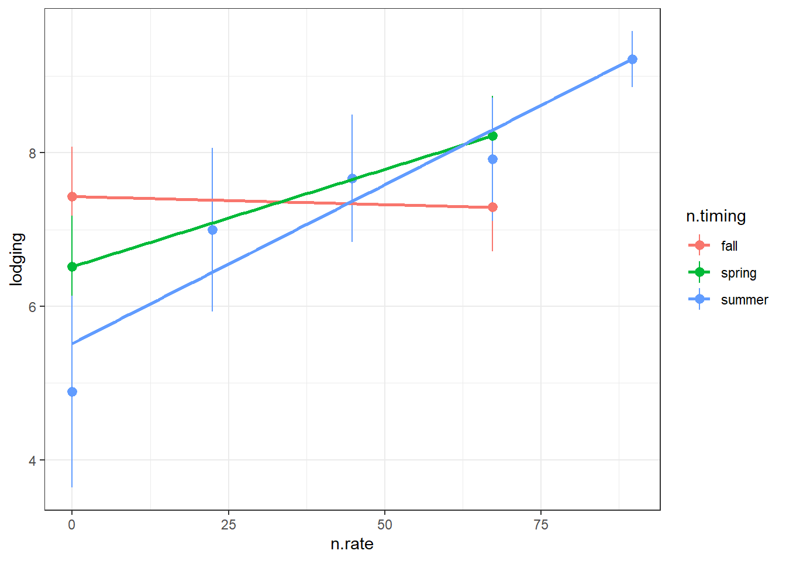
Looking at treatment timing with N rate, I see a bit more red dots (fall) with lower lodging, but it’s messy. Sprint split has some of the most lodging, but also an outlier at near 150 kg N ha where there was no lodging

Here we are fitting a logistic regression with a y intercept of zero because we assume at 0N there is no lodging (as shown with control plots) and that lodging score will increase as nitrogen rate increases but that lodging will never exceed 10. The takeaway from this figure is that there is no lodging at 0N and that you see less lodging when you apply in fall and more when you apply in spring and summer.
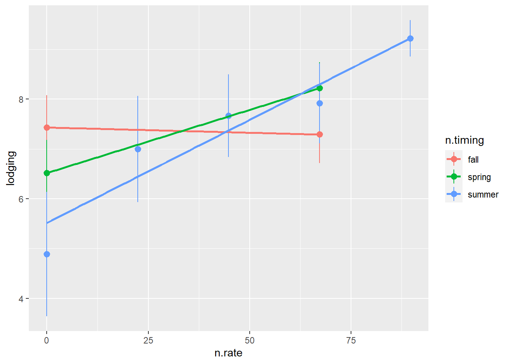
This is a funkier way to look at this data based on how I organized the data and it is confusing so may not be worth trying to interpret.. Every lodging observation has a corresponding amount of N applied in fall, spring and summer. All of the spring plots, for example, also are plots where no N was applied in the fall. So within each of the timings (fall, spring or summer), the entire lodging dataset is represented. This also means the lodging dataset is duplicated 3 times when we do this. I am not sure if this is ok, but this is how I think this can be interpreted.
With more N there is more lodging, but we also see more lodging when the N is applied closer to harvest.
| Timing of N | m (lodging ~ m*nrate + b) |
|---|---|
| fall | -0.002 |
| spring | 0.025 |
| summer | 0.041 |
Analysis
When we fit logistic curves, it looked like the lodging was lowest in the control and fall plots. Let’s see if this is true.
Analysis of Variance Table
Response: lodging
Df Sum Sq Mean Sq F value Pr(>F)
log(n.total + 1) 1 3109.08 3109.08 428.8900 <2e-16 ***
timing 5 19.87 3.97 0.5481 0.7388
log(n.total + 1):timing 3 18.84 6.28 0.8664 0.4655
Residuals 45 326.21 7.25
---
Signif. codes: 0 '***' 0.001 '**' 0.01 '*' 0.05 '.' 0.1 ' ' 1We cannot reject Ho that timing has an impact on lodging.
timing emmean SE df lower.CL upper.CL .group
Control 0.333 1.559 49 -2.80 3.47 1
Fall 6.500 0.779 49 4.93 8.07 2
Fall-Summer Split 8.083 0.779 49 6.52 9.65 2
Spring-Summer Split 8.167 0.779 49 6.60 9.73 2
Spring 8.267 0.697 49 6.87 9.67 2
Confidence level used: 0.95
P value adjustment: tukey method for comparing a family of 5 estimates
significance level used: alpha = 0.05
NOTE: If two or more means share the same grouping symbol,
then we cannot show them to be different.
But we also did not show them to be the same. Obviously, if we look just at timing then the control plots have less lodging than the rest of the plots receiving N. Takeaway here is that lodging is correlated with increases in N, but we cannot reject the Ho that timing does not have an impact. It looks like fall applied N had less impact on lodging, but we cannot reject Ho.
Based on analysis, we are better off just fitting a general curve to lodging by nrate, we will need to do more analysis to find the best curve with the most fitting relationship.
V17
Lodging is below threshold of 6, meaning we think this yield data is still good.
We are just looking to see if similar trends to R100 where applying more N leads to more lodging and where applying N closer to harvest correlates with more lodging
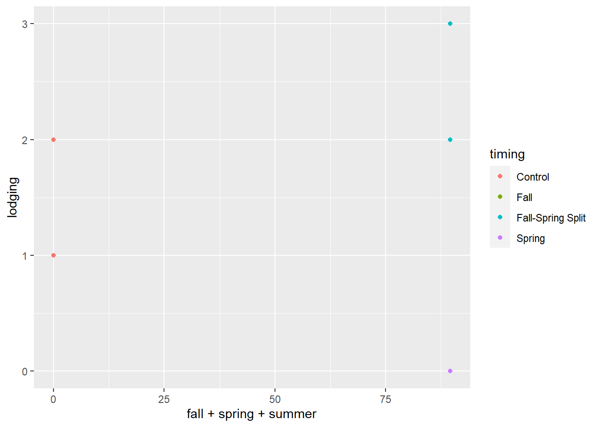
Lodging only occurred in the stands second year of production. This could’ve just been a harvest timing issue, but harvest was 3Aug so unlikely.
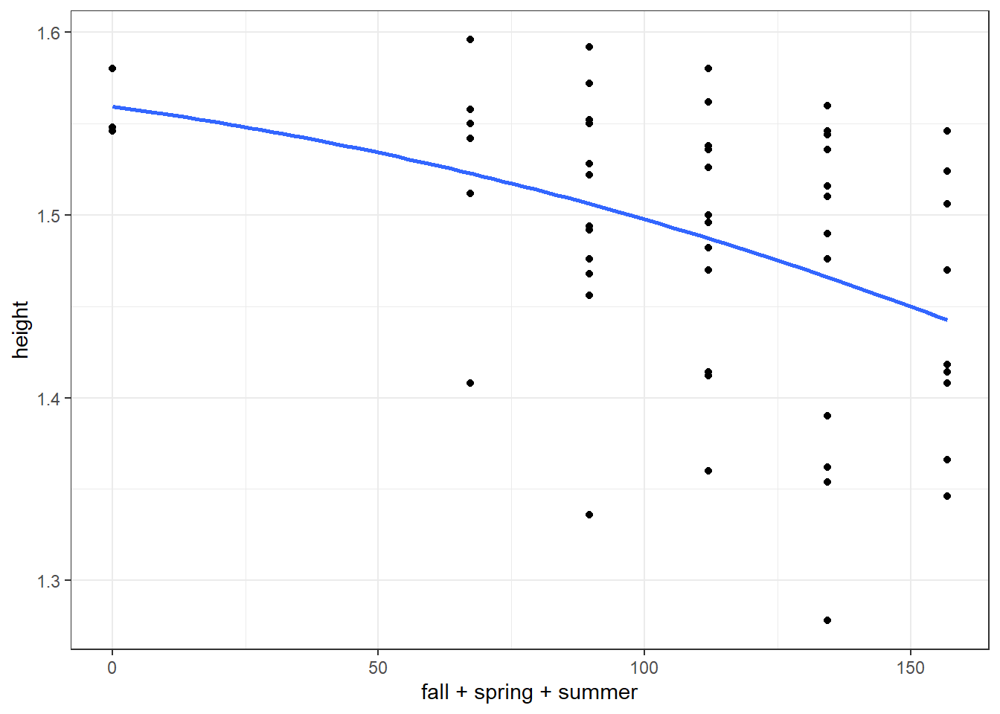
Not a strong relationship between N rate and lodging. There is a good amount of lodging in control. Nothing to see here.

Plant height
Plant height is also not a measurement of primary interest.
We are curious to what extent plant height relates to lodging in R100
We are curious more broadly how plant height was distributed across experiments.
R100 year 3
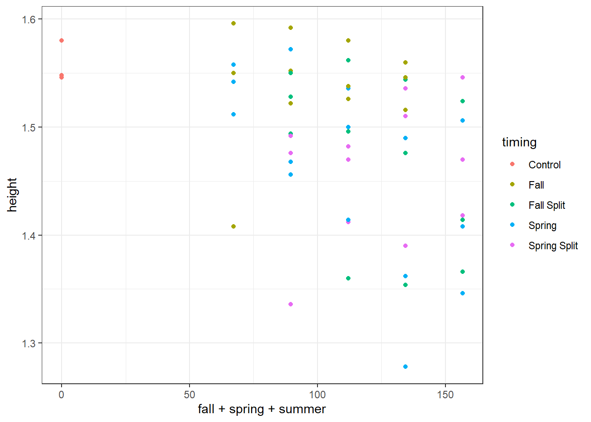
We observe an overall trend of decreasing plant height as N rate increases.
Analysis of Variance Table
Response: height
Df Sum Sq Mean Sq F value Pr(>F)
n.total 1 0.049647 0.049647 10.7931 0.001908 **
timing 4 0.037013 0.009253 2.0116 0.107787
Residuals 48 0.220797 0.004600
---
Signif. codes: 0 '***' 0.001 '**' 0.01 '*' 0.05 '.' 0.1 ' ' 1Cannot reject Ho that timing has no effect on the effect of n rate on plant height
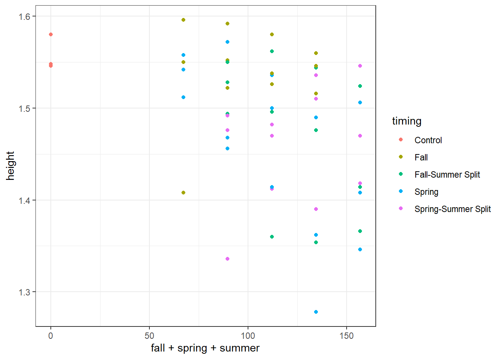
We have learned from R100 in it’s third stand age that as nrate increases, there is an increase in lodging and a decrease in plant height.
Let’s see if they’re correlated
lodging height
lodging 1.0000000 -0.4993655
height -0.4993655 1.0000000We observe a pearson correlation coefficient of -0.5 between height and lodging. This is considered between a moderate and strong correlation.
V17
We only have height data for V17 in stand ages 2 and 3 besides the R100 in stand age 3.
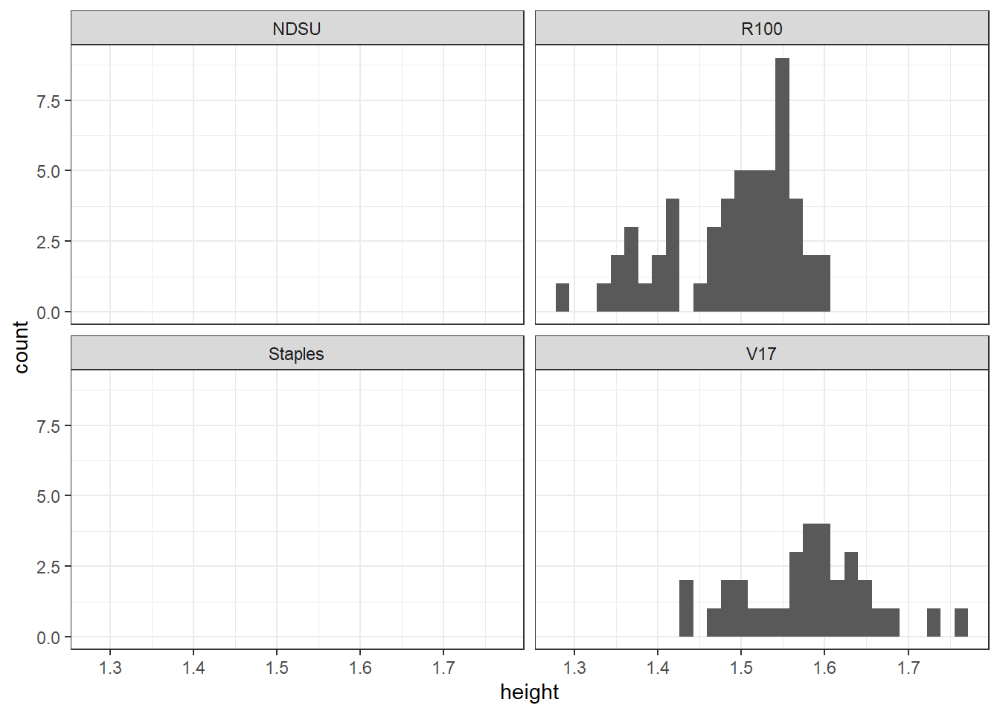
alright, we only have two sites with plant height data
Analysis of Variance Table
Response: height
Df Sum Sq Mean Sq F value Pr(>F)
n.total 1 0.000056 0.000056 0.0092 0.924
Residuals 30 0.181829 0.006061 We cannot reject Ho that plant height is the same across n rates
Yield
cumulative
Cumulative yield of kernza stands after 3 years of N fertilizer. Only V17 and Staples meet this criteria. One advantage of this is that we do not have to look at stand.age since we are looking across all three years.
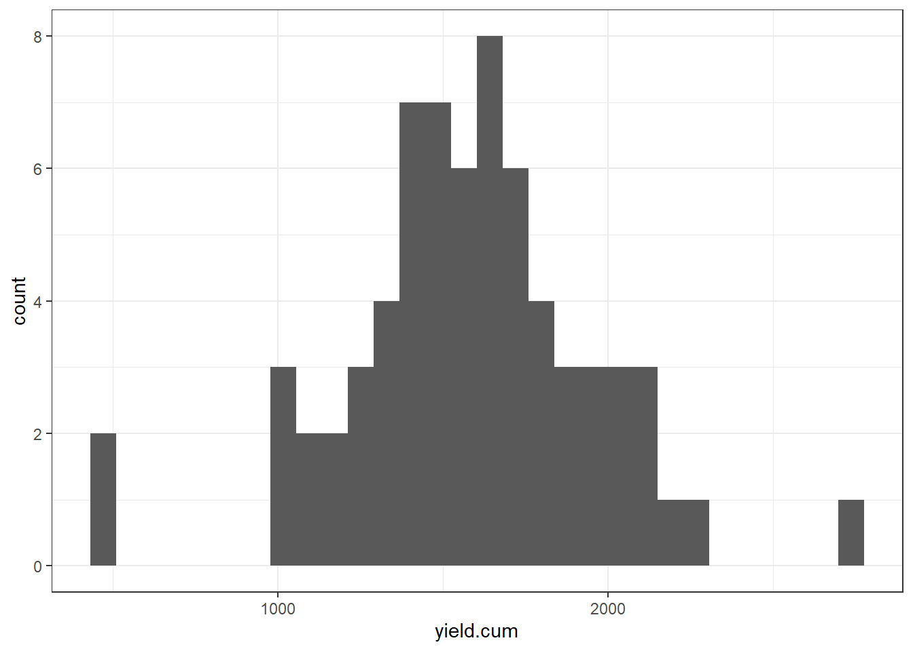
quadratic model
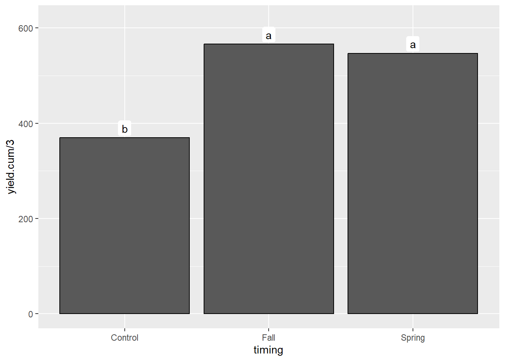
[1] 1000.713[1] 1020.782Ok, so there is an effect of cumulative N when modelled quadratically versus linear
Look at timing…
Analysis of Variance Table
Response: yield.cum
Df Sum Sq Mean Sq F value Pr(>F)
poly(cumn, 2) 2 2011131 1005565 12.0239 0.0001701 ***
location 1 2181936 2181936 26.0901 2.065e-05 ***
timing 2 284394 142197 1.7003 0.2009473
poly(cumn, 2):location 2 114253 57126 0.6831 0.5132778
poly(cumn, 2):timing 3 186149 62050 0.7419 0.5360498
location:timing 2 71804 35902 0.4293 0.6551831
Residuals 28 2341662 83631
---
Signif. codes: 0 '***' 0.001 '**' 0.01 '*' 0.05 '.' 0.1 ' ' 1Now that I’m modeling quadratically, we can reject the Ho there is no relationship between nitrogen rate and yield, but we cannot reject Ho that timing doesn’t matter
mixed effect model
Here we have our fixed effect of cumulative N, timing and a random effect of block. Since we only have two sites, location is treated as a fixed effect.
Analysis of Deviance Table (Type II Wald chisquare tests)
Response: yield.cum
Chisq Df Pr(>Chisq)
poly(cumn, 2) 0.5868 2 0.7457
timing 4.0312 2 0.1332
location 27.2054 1 1.829e-07 ***
poly(cumn, 2):timing 2.8742 3 0.4114
poly(cumn, 2):location 1.1353 2 0.5669
timing:location 0.8907 2 0.6406
poly(cumn, 2):timing:location 0
---
Signif. codes: 0 '***' 0.001 '**' 0.01 '*' 0.05 '.' 0.1 ' ' 1The best model I can create (lowest AIC) finds a difference in cumulative yield by location, but not an effect of nrate, timing or an interaction.
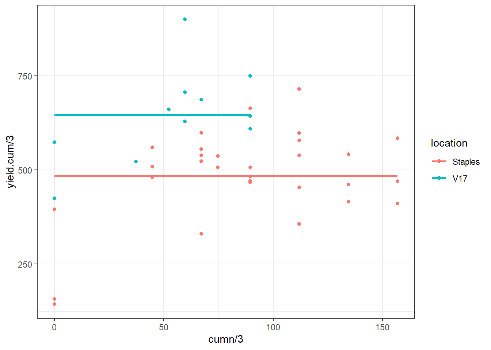
TAKEAWAY: We applied N at differing rates and timings over 3 years at two locations. We cannot reject the Ho that the amount of N and the timing of N do not impact the cumulative yield over the 3 years. I would say our data suggests a quadratic or logarithmic relationship at around 60 kg N ha per year does not result in noticeably greater grain yields.
Yearly performance
Now we can use our full dataset with the exception of R100 in third year.
How does N timing and N amount correlate with yield?

N rate as quadratic or linear?
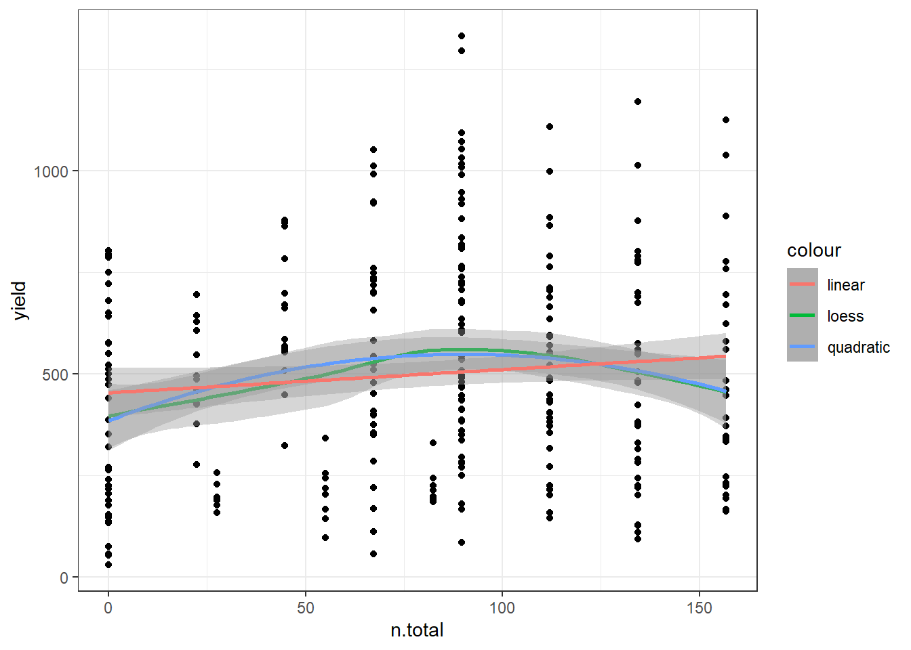
yield response to N appears to be more quadratic than linear, improper estimation happens at very high and low n rates. let’s test a quadratic vs linaer model
Quadratic is better!
full model, site-years as random
# A tibble: 9 × 3
# Groups: location [4]
location year n
<fct> <int> <int>
1 NDSU 2020 16
2 NDSU 2021 16
3 R100 2018 54
4 Staples 2018 54
5 Staples 2019 54
6 Staples 2020 54
7 V17 2019 16
8 V17 2020 16
9 V17 2021 16Analysis of Deviance Table (Type II Wald chisquare tests)
Response: yield
Chisq Df Pr(>Chisq)
poly(n.total, 2) 11.3441 2 0.0034408 **
timing 32.6082 5 4.501e-06 ***
stand.age 15.4806 2 0.0004349 ***
poly(n.total, 2):timing 4.7840 7 0.6863047
poly(n.total, 2):stand.age 4.1964 4 0.3800799
timing:stand.age 5.3474 8 0.7198837
poly(n.total, 2):timing:stand.age 3.3978 10 0.9704556
---
Signif. codes: 0 '***' 0.001 '**' 0.01 '*' 0.05 '.' 0.1 ' ' 1nitrogen rate on yield

There is an effect of nitrogen rate on yield and it is quadratic.
timing on yield
| timing | emmean | CI | n |
|---|---|---|---|
| Fall | 610 a | 246-975 | 32 |
| Control | 570 ab | 229-912 | 32 |
| Fall-Spring Split | 507 ab | 156-858 | 12 |
| Fall-Summer Split | 505 b | 141-870 | 48 |
| Spring | 456 b | 83-828 | 96 |
| Spring-Summer Split | 420 b | 54-785 | 48 |
We can reject the Ho that yields were the same regardless of timing. Applying in the fall was estimated to have a higher grain yield than when split in the spring, summer or applied alone in the spring.
stand age on yield
stand.age emmean SE df lower.CL upper.CL .group
3 218 159 5.82 -173 609 1
2 650 125 4.16 309 991 1
1 666 141 5.12 307 1025 1
Results are averaged over the levels of: timing
Degrees-of-freedom method: kenward-roger
Confidence level used: 0.95
P value adjustment: tukey method for comparing a family of 3 estimates
significance level used: alpha = 0.05
NOTE: If two or more means share the same grouping symbol,
then we cannot show them to be different.
But we also did not show them to be the same. We can reject Ho that yields were similar regardless of stand.age but cannot make pairwise comparisons among timing levels at an alpha 0.05 and a tukey adjustment.
full model, location as fixed effect
Analysis of Deviance Table (Type II Wald chisquare tests)
Response: yield
Chisq Df Pr(>Chisq)
poly(n.total, 2) 8.1275 2 0.01718 *
timing 28.2269 5 3.286e-05 ***
stand.age 360.7091 2 < 2.2e-16 ***
location 146.7114 3 < 2.2e-16 ***
poly(n.total, 2):timing 4.8674 7 0.67614
poly(n.total, 2):stand.age 6.4476 4 0.16812
timing:stand.age 12.5923 8 0.12667
poly(n.total, 2):location 8.2761 5 0.14166
timing:location 9.4765 5 0.09150 .
stand.age:location 33.7429 3 2.245e-07 ***
poly(n.total, 2):timing:stand.age 1.7945 10 0.99769
poly(n.total, 2):timing:location 3.5339 4 0.47274
poly(n.total, 2):stand.age:location 1.7936 4 0.77365
timing:stand.age:location 0.3329 2 0.84667
poly(n.total, 2):timing:stand.age:location 0
---
Signif. codes: 0 '***' 0.001 '**' 0.01 '*' 0.05 '.' 0.1 ' ' 1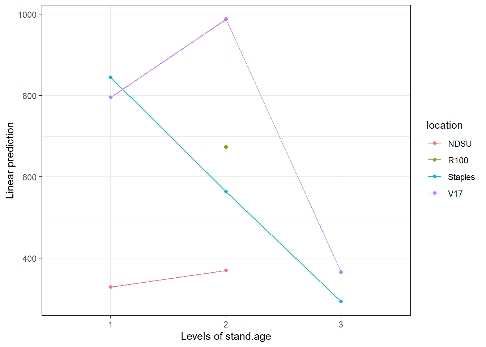
Analysis of Deviance Table (Type II Wald chisquare tests)
Response: yield
Chisq Df Pr(>Chisq)
poly(n.total, 2) 10.7538 2 0.004622 **
timing 36.3076 5 8.243e-07 ***
stand.age 425.5273 2 < 2.2e-16 ***
location 156.3313 2 < 2.2e-16 ***
poly(n.total, 2):timing 4.0963 7 0.768623
poly(n.total, 2):stand.age 7.5965 4 0.107527
timing:stand.age 14.8525 8 0.062079 .
poly(n.total, 2):location 2.2606 3 0.520119
timing:location 2.4905 2 0.287867
stand.age:location 39.9292 3 1.103e-08 ***
poly(n.total, 2):timing:stand.age 2.1166 10 0.995366
poly(n.total, 2):timing:location 0
poly(n.total, 2):stand.age:location 2.0729 4 0.722358
timing:stand.age:location 0.3926 2 0.821752
poly(n.total, 2):timing:stand.age:location 0
---
Signif. codes: 0 '***' 0.001 '**' 0.01 '*' 0.05 '.' 0.1 ' ' 1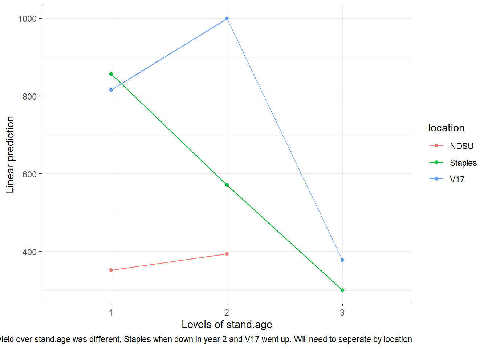
Let’s try looking at each stand.age
slice by stand age
Analysis of Deviance Table (Type II Wald chisquare tests)
Response: yield
Chisq Df Pr(>Chisq)
poly(n.total, 2) 4.3109 2 0.1159
timing 5.3330 4 0.2548
location 68.9168 2 1.084e-15 ***
poly(n.total, 2):timing 0.8841 4 0.9268
poly(n.total, 2):location 1.4052 3 0.7043
timing:location 0.1639 1 0.6855
poly(n.total, 2):timing:location 0
---
Signif. codes: 0 '***' 0.001 '**' 0.01 '*' 0.05 '.' 0.1 ' ' 1Main effect of location
Analysis of Deviance Table (Type II Wald chisquare tests)
Response: yield
Chisq Df Pr(>Chisq)
poly(n.total, 2) 14.3748 2 0.000756 ***
timing 30.0587 5 1.436e-05 ***
location 118.6736 2 < 2.2e-16 ***
poly(n.total, 2):timing 4.1718 6 0.653435
poly(n.total, 2):location 2.9520 3 0.399092
timing:location 0.5350 2 0.765288
poly(n.total, 2):timing:location 0
---
Signif. codes: 0 '***' 0.001 '**' 0.01 '*' 0.05 '.' 0.1 ' ' 1Main effect of nrate timing and location
Analysis of Deviance Table (Type II Wald chisquare tests)
Response: yield
Chisq Df Pr(>Chisq)
poly(n.total, 2) 0.1692 2 0.918900
timing 32.0791 5 5.731e-06 ***
location 9.8067 1 0.001739 **
poly(n.total, 2):timing 2.6794 6 0.847872
poly(n.total, 2):location 1.9793 1 0.159469
timing:location 4.4652 1 0.034592 *
poly(n.total, 2):timing:location 0
---
Signif. codes: 0 '***' 0.001 '**' 0.01 '*' 0.05 '.' 0.1 ' ' 1interaction between timing:location
stand age 2 with no interactions
Analysis of Deviance Table (Type II Wald chisquare tests)
Response: yield
Chisq Df Pr(>Chisq)
poly(n.total, 2) 14.3748 2 0.000756 ***
timing 30.0587 5 1.436e-05 ***
location 118.6736 2 < 2.2e-16 ***
poly(n.total, 2):timing 4.1718 6 0.653435
poly(n.total, 2):location 2.9520 3 0.399092
timing:location 0.5350 2 0.765288
poly(n.total, 2):timing:location 0
---
Signif. codes: 0 '***' 0.001 '**' 0.01 '*' 0.05 '.' 0.1 ' ' 1| timing | emmean | CI | n |
|---|---|---|---|
| Fall | 768 a | 677-860 | 16 |
| Fall-Summer Split | 722 ab | 615-829 | 12 |
| Fall-Spring Split | 670 abc | 518-821 | 4 |
| Control | 638 abc | 346-929 | 11 |
| Spring | 585 bc | 503-667 | 31 |
| Spring-Summer Split | 520 c | 413-627 | 12 |
slice by site
Lastly, we can slice by site and do an independent analysis for each site. This is what Dominic did and makes a lot of sense.